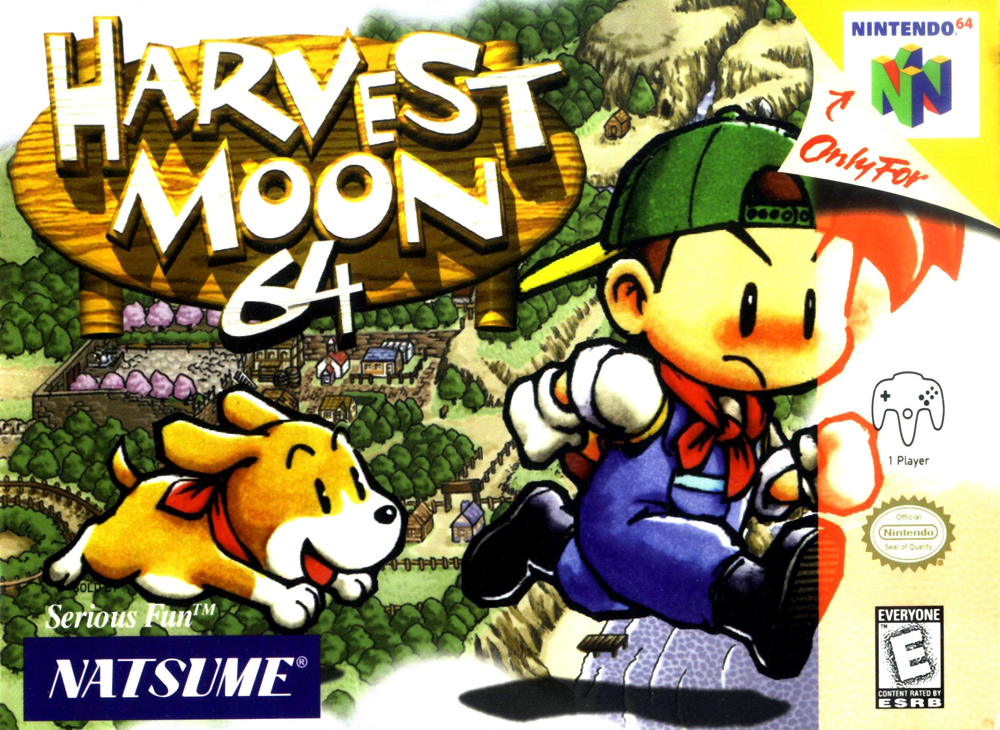

Harvest Moon 64 |
|  |
Console: Nintendo 64 |
Introdução: O jogo começa na fazenda em uma ilha no meio do nada, onde seu avô viveu e recentemente morreu. Você é introduzido pelo Prefeito e ele dá um tour ao redor não só da sua fazenda, mas da cidade.
Você rapidamente nota que a fazenda está em uma condição muito pobre desde que ninguém trabalhou nela desde que seu avô morreu. Sim está certo, seu avô costumava ser dono desta fazenda. Você assume a responsabilidade de restaurar a fazenda ao seu estado original e ser amigavel com a maioria dos aldeãos no passar de 3 anos.
No terceiro ano seu Pai virá para ilha e avaliará seu três anos de trabalho. Por todo jogo você jogadrá como "Jack" o fazendeiro que teve lembranças de infância, sonhos e se amigavel com muitos aldeãos pela cidade. A parte principal do jogo dura 3 anos, mas se você teve sucesso você pode jogar até o desejo do seu coração. |
Quem é Jack? Jack é o neto do jogador que você controla no jogo do Super Nintendo(Seu nome também é Jack). Jack viveu na cidade pelo litoral iluminado pelas estrelas com seu pai a maior parte de seu tempo, só passando alguns verões na fazenda com seu avô. Embora seu avô recentemente morreu e sua fazenda era florescida e agora está caida em desordem. Jack agora tem a responsabilidade de trazer de volta a fazenda aos seus dias de glorias e fazer seu avô orgulhoso. Jack terá nove estações(2 anos de calendário e 1 estação) para restaurar a fazenda de seu avô ou o pai de Jack o forçará a deixa-la e irá trabalhar com ele nos negócios na cidade. |